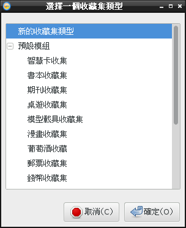
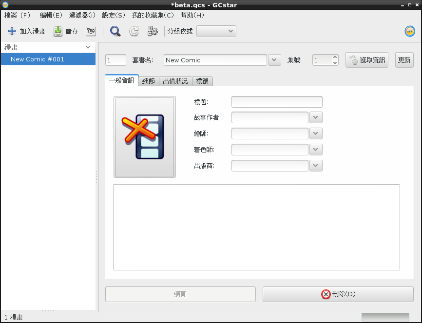
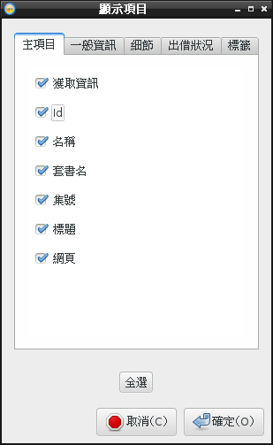
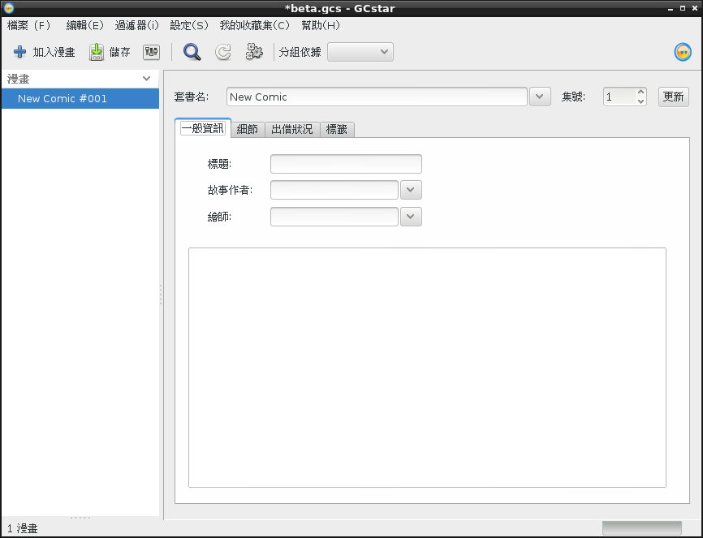
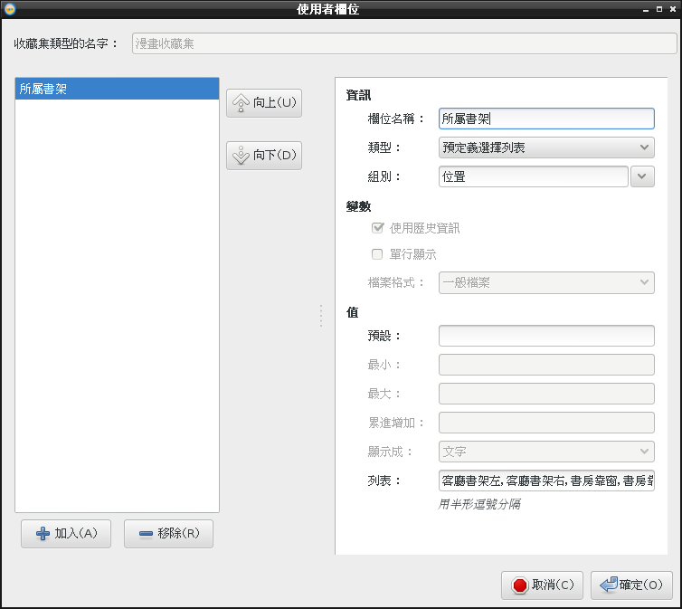
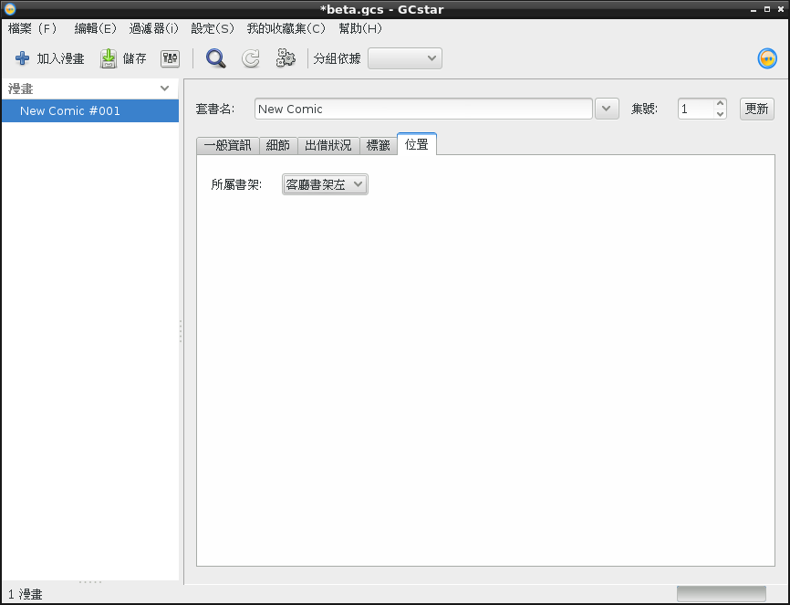
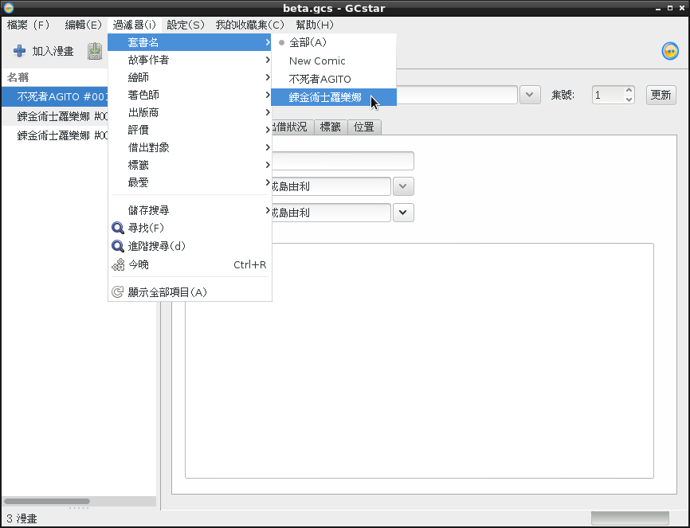
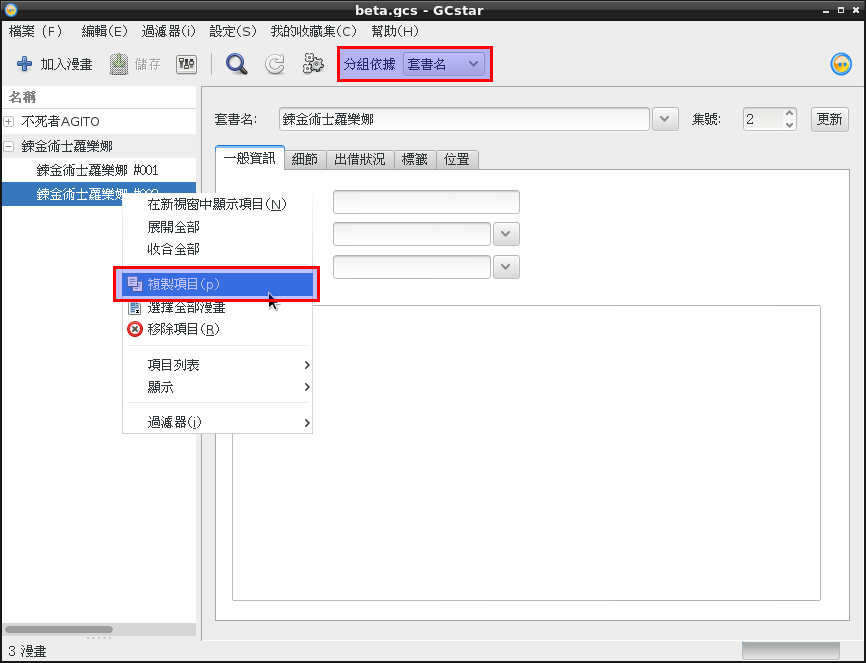

也紀念我們永遠的朋友 李士傑先生（Shih-Chieh Ilya Li）。
GCStar 收集狂的藏寶箱
「狂熱者們，為汝輩的瘋狂而喝彩吧！」
您有沒有在收集什麼？就是那種……被其他人發現您收集的類型或規模時，會用異樣神情盯著您瞧的東西？
郵票？模型？酒？軟體？書籍？錢幣？唱片？
您對您的收藏有多著迷？您會建立清單嗎？您有收藏櫃嗎？您曾經晚上站在收藏品前面自得自滿，自言自語，東挑西撿地說著「今天晚上就來享受／鑑賞／保養這一個好了！」？
您有這樣的經驗嗎？
如果沒有，恭喜您，您是個正常而又普通的人，請繼續維持您的普通，並停止閱讀本篇文章，本文對您沒有任何幫助，反而可能會害您變得不太正常。
不過如果您擁有另一種可歌而又可泣的回答，那麼本軟體就是為您而準備的。
GCStar 是款專門為收集狂設計的收藏品管理軟體，您可以用它來記錄您的收藏品，預設的收藏品模版涵蓋「酒」、「錢幣」、「智慧卡」、「唱片」、「郵票」、「漫畫」等等共十來種。另外，除了直接使用現有的模版以外，您也可以簡單修改這些模版，替他們加上新欄位。您甚至可以自訂全新模版，供您自己的某些特定收藏類型使用。
安裝
Linux 用戶請從發行版套件庫進行安裝，GCStar 支援包含 ArchLinux、ubuntu、Fedora、Gentoo 等眾多主流發行版；如果您沒有在您發行版的套件庫中找到這款軟體，也可以從 https://wiki.gcstar.org/en/Install 下載原碼包進行安裝。
至於 Windows 平台用戶，請到 https://wiki.gcstar.org/en/install_windows 下載安裝包。
Mac OS X 也能安裝 GCStar，不過手續相當地麻煩，建議各位還是別整自己了。如果您無論如何都想試試，請看這一頁：https://wiki.gcstar.org/en/install_macos。
使用簡介
第一次啟動 GCStar 後，您會看到一個選擇畫面，讓您選擇您要記錄的物品類型。不同的類型會提供您不同的記錄欄位。

▲ 圖1：剛開啟 GCStar 時，會出現選擇收藏品類型的視窗。
如果您想要記錄的收藏類型沒有列於其中，則可選擇「新的收藏集類型」來自訂一個新的收藏集。
您也可以在此將記錄在其他收藏軟體中的收藏資料，又或是用 excel 記錄的資料，匯入到 GCStar 中。
現在，請隨便建立一個收藏集試試看。

▲ 圖2：一個漫畫收藏集。
收藏集的主畫面很簡單，左側是一串清單列表，列出每一個單獨的收藏項目（在上例中就是每一本漫畫），右側是選中項目的資訊，依據當初所選的收藏集類型不同，此處的欄位也有所不同。
變更預設的欄位配置
預設可填的資料通常會有很多甚至太多，請注意上圖僅僅只顯示了一個標籤頁而已。除非您有不錯的資料來源，可以讓程式自動抓取資料，否則這邊的項目全都必須要由您親自填寫，會發瘋的……
這些欄位之中，有些很少用到，有些更是壓根不知道要填什麼才好，留白的話又難免讓完美主義者感到不爽（嗯，我相信收藏狂大都是完美主義者……）。總之我們先將現有的欄位重新整理一下，讓它更符合我們的個人需求。
請按「設定」→「顯示資訊」，則會出現以下的顯示項目視窗：

▲ 圖3：顯示項目視窗。您可以在本視窗中到處打勾，沒勾到的東西就不會顯示出來。
Id 用不到、出版商我不在乎、底部的網頁按鈕不知是幹啥的一樣去掉、日式漫畫幾乎沒有專門獨立出著色師，我也用不著……
如此東刪西砍，需要填入的資料量就大大減少了。如下：

▲ 圖4：經過精減的畫面。
有時我們也需要加入一些預設沒有提供的欄位，比方說我可能會想加入一項名叫「所屬書架」的項目，日後才容易尋找。
請按「編輯」→「變更收藏集欄位」：

▲ 圖5：編輯新欄位

▲ 圖6：在新的標籤頁中建立了新欄位
搜尋與過濾器
記錄了資料，要能方便地將資料取出才有意義，而這就要透過搜尋與過濾器功能。
您可以透過主選單上的「過濾器」來進行搜尋與篩撿。此處過濾器中的項目，受到您當前收藏集的類型不同而有所不同。

▲ 圖7：過濾器的項目因收藏集不同而異。
搜尋選項也在其中。一旦您進行過搜尋，還可以將搜尋結果儲存起來，供下次快速點取使用。
其中有個「今晚」選項讓人困惑，不過那其實只是隨機骰骰子挑出一個項目而已。如果您不知道今晚要享受什麼才好，就骰骰看吧。其他設定與小技巧
您可以透過「設定」→「新項目的預設值」，來定義新項目的各個參數。
除此之外，您還可以在現有項目上按右鍵選「複製項目」，來複製一筆一模一樣的項目。當新資料與舊資料有許多欄位都一樣時（比方說同一系列書籍的不同集數），這招可以讓您只需修改部份訊息，省下不少填表的時間，很好用。
GCStar 左側的列表，除了基本的平鋪以外，還可以透過主介面上的「分組依據」，以各種方式進行分組。這方面請參考下圖。

▲ 圖8：本圖左側的方框標示了「複製項目」在右鍵選單中的位置。此外也請注意左側的列表型式和先前的示意圖不一樣，能被折疊，這是因為在右側方框中選擇了某種分組方式；您可以以幾乎所有的欄位進行分組，比方說出版商、作者等等。
如果您想要將您的寶貝收藏品借給他人炫耀（傳教），您還可以去「設定」→「出借對象」處，設定可能的出借對象名單與其聯絡方式，這份名單將會在「出借狀況」頁籤中被使用。當然如果您壓根不打算出借就沒必要理會這個功能。
Bug
剛開啟程式時新建收藏集可能存在問題
在進入程式、創建某些類型的收藏集時，如果會讓程式中所有按鈕都變成灰色無法繼續操作，則您可以先試著創建其他類型的、能正常被您建立的收藏集，然後再從主選單中選擇「File」→「新增」來重新創建您想要新建的收藏集種類，如此按鈕就不會變成灰色。
您可以參考看看這種作法。
圖片儲存位置
指定的圖片，似乎無法自動搬移到收藏集檔案的所屬資料夾中，且這我找不到解決方法。建議乾脆不要記錄圖片。
翻譯問題
在下最近才重新提交了繁體中文翻譯，然而依照 GCStar 的更新速度，這翻譯可能要花上一段時間才會併入主程式庫中。如果各位無法忍耐的話，此處也直接提供最新版的翻譯包下載（下載連結）。您可以將翻譯包中的 ZH 資料夾置入 lib/gcstar/GCLang 之下，取代同名資料夾，作為暫時解決方法。
如果您覺得還是有什麼地方翻譯不好，您也可以告訴我。比方說一本書的 Collection、Category 與 Type 分別應該翻成什麼，郵票的紙質、齒孔、黏膠與郵戳類型，模型車的 Manufacturer 與 Constructor 的正確翻法。諸如此類。雖然有查資料，但受限於常識不足，恐怕仍然無法面面俱到。
另一些想法
除了親手填入資料以外，許多 GCStar 模版其實也包含了透過網路下載 Metadata 的功能。不過受限於中文資料來源的匱乏，各位恐怕還是親手填入比較乾脆。
其他收藏品姑且不論，在台灣出版的書籍，Metadata 往往都不知道該去哪裡下載才好，這讓許多書籍類管理軟體能取得的資訊，都有很大的殘缺，特別是適合機讀的 Metadata 更是難找。在下之前研究 Calibre 時就有注意過這個問題了。那時就很想給 Calibre 寫個 plugin，但是首先就沒有資料來源可用。
現在覺得比較可用的中文書籍資料來源，大概只有 anobii 吧，但其機讀 API 最近似乎也掛了，得直接爬網頁抓資料，各位有興趣或許可以研究看看。
參考連結
- GCStar 的官網在此：https://www.gcstar.org/
- 另一款類似的軟體 Tellico：https://tellico-project.org/
專欄總覽


E-Mail：contact@openfoundry.org Address：台北市南港區研究院路2段128號 中央研究院資訊科學研究所 . 隱私權條款. 使用條款